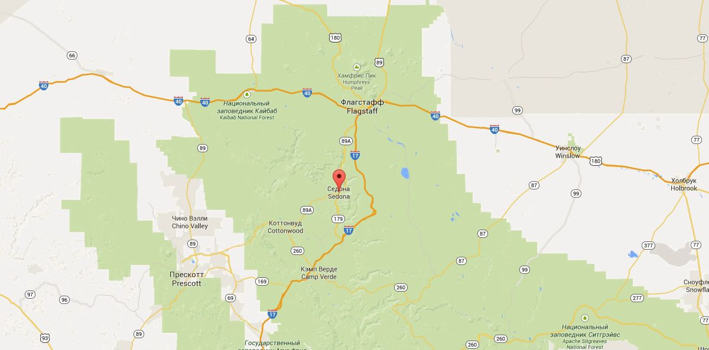

Седона

Седона - небольшой городок в Аризоне, заслуживающий большего!
Рассмотрим 5 причин, по которым Седона круче, чем Гранд Каньон
-
Настоящий городок
— №1 —
Седона — не аттракцион для туристов, там течёт своя жизнь

-
Жилье
Рекомендуем пожить в настояще мотеле, все как в кино!
-
Еда
Всегда заказывайте фирменный бургер, вы не зазочаруетесь!
-
Сувениры
Не только китайского, но и местного производства!
-
-
Там есть мост дьявола
— №2 —
Да, по нему мождно пройти! Если, конечно, вы осмелитесь

-
Небольшая площадь
— №3 —
Все достопримечательности находятся очень близко
-
Красивая дорога
— №4 —
Ехать в Седону из Лас-Вегаса совсем не скучно!
-
Мало туристов
— №5 —
Большинство едет в Гранд-Каньон и толпится там
Заинтересовались?
Укажите предполагаемые даты поездки, и мы покажем вам лучшие приложения гостиниц в Седоне
